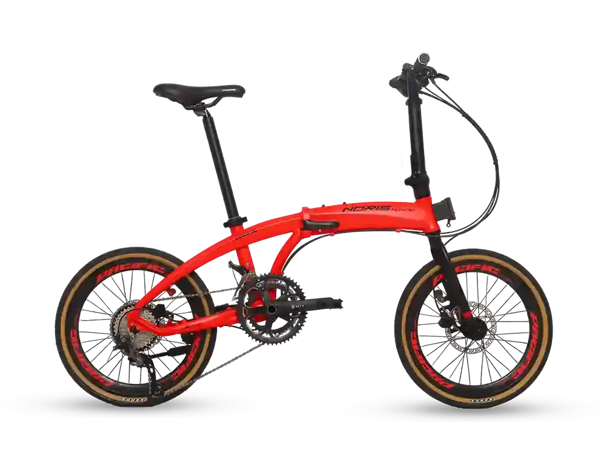

|

|
Pacific Noris 3.0
Rp 4.800.000
Deskripsi Produk
Pacific Noris 3.0 adalah sepeda lipat (folding bike)
berukuran roda 20 inci yang dirancang untuk penggunaan harian,
komuter, maupun olahraga santai. Sepeda ini populer karena menggunakan rangka
berbahan Alloy 6061 yang ringan, kokoh, dan dilengkapi dengan komponen
mumpuni seperti rem cakram hidrolik serta drivetrain 9-speed.
Dilengkapi rangka yang kuat dan sistem perpindahan gigi yang responsif,
Pacific Noris 3.0 mampu memberikan pengalaman berkendara yang stabil dan
nyaman. Sistem suspensi depan membantu meredam getaran saat melewati jalan
yang tidak rata sehingga perjalanan menjadi lebih aman, santai dan menyenangkan.
Spesifikasi
| Merek |
: |
Pacific |
| Tipe |
: |
Noris 3.0 |
| Jenis |
: |
Sepeda lipat (Folding bike) |
| Frame |
: |
Aluminium Alloy |
| Fork |
: |
Suspension Fork |
| Jumlah Gear |
: |
21 Speed |
| Ukuran Roda |
: |
27.5 Inch |
| Sistem Rem |
: |
Mechanical Disc Brake |
| Warna |
: |
Hitam - Hijau |
| Berat |
: |
±14,5 Kg |
|